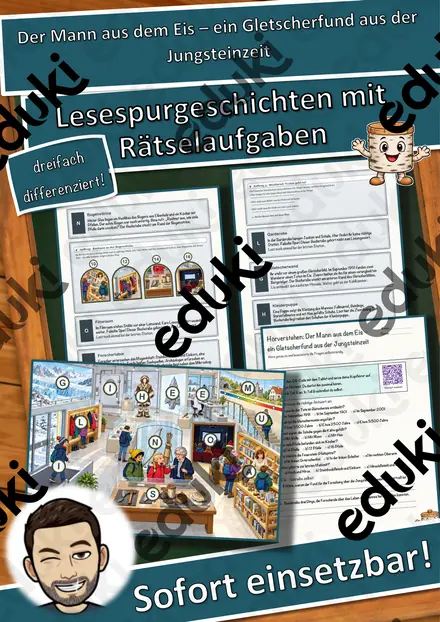

Steinzeit: Arbeitsblätter für Klasse 3–6 (Geschichte)
Die Steinzeit ist der klassische Einstieg in Geschichte. Kinder entdecken Lebensweise, Werkzeuge und Höhlenmalerei und lernen, wie man aus Funden Rückschlüsse zieht.
Im Unterricht begegnen den Lernenden zuerst Altsteinzeit und Jungsteinzeit. Wer weitergeht, behandelt Jäger und Sammler, Höhlenmalerei, Faustkeil sowie Sesshaftigkeit.
Wo genau im Lehrplan das Thema steht, unterscheidet sich von Land zu Land, häufig im Fach Geschichte in den Klassen 3 bis 6. Gemeinsames Ziel: die Schülerinnen und Schüler beschreiben den Wandel von Jägern und Sammlern zu Ackerbauern.
Ob Vertretungsstunde, Stationenarbeit oder Hausaufgabe: Die Arbeitsblätter zu Steinzeit lassen sich flexibel einsetzen, etwa mit Altsteinzeit als Auftakt und Sesshaftigkeit als Abschluss. Musterlösungen sparen die Korrekturzeit. Zur Differenzierung eignen sich die Lesespurgeschichten mit ihren drei Niveaustufen.
Die Auswahl zum Thema umfasst derzeit 13 Titel, zum Beispiel Materialpaket Steinzeit und Ägypten, Steinzeit, Materialpaket Steinzeit (auch Homeschooling) und Der Mann aus dem Eis. Dazu zählen 3 Lesespurgeschichten und 6 Lückentexte mit Hörverstehen für Klasse 4–7. Höhlenmalerei mit Kreide und Kohle auf braunem Packpapier ist ein verlässlicher Einstieg, der in Erinnerung bleibt.
Das gehört zum Thema
Passende Arbeitsblätter und Materialpakete

Materialpaket Steinzeit und Ägypten, Steinzeit, Ägypten

Materialpaket Steinzeit (auch Homeschooling)

Der Mann aus dem Eis – ein Gletscherfund aus der Jungsteinzeit – Lesespurgeschichte mit Rätselaufgaben (Klasse 6)

Höhlenmalerei – die ersten Künstler – Lesespurgeschichte mit Rätselaufgaben (Klasse 5)

Die Reise in die Steinzeit – Lesespurgeschichte mit Rätselaufgaben (Klasse 5)

Jäger und Sammler Lückentext mit Wortspeicher Hörverstehen und Suchsel

Höhlenmalerei Lückentext mit Wortspeicher Hörverstehen und Suchsel

Jungsteinzeit Lückentext mit Wortspeicher Hörverstehen und Suchsel

Benutzer-Lex Braun-Steinzeit Lückentext mit Wortspeicher Hörverstehen und Suchsel

Eiszeit Lückentext mit Wortspeicher Hörverstehen und Suchsel

Altsteinzeit Lückentext mit Wortspeicher Hörverstehen und Suchsel

Tafelmaterial Steinzeit

Steinzeit, Urzeit Homeschooling Steinzeit (auch Homeschooling)
Häufige Fragen
Für welche Klassenstufe passen die Arbeitsblätter zu Steinzeit?
Der Schwerpunkt liegt auf Klasse 6; insgesamt deckt die Auswahl (13 Titel) Klasse 4–7 ab. In der Beschreibung jedes Materials steht die empfohlene Stufe.
Welche Inhalte decken die Materialien zu Steinzeit ab?
Inhaltlich reicht die Auswahl von Altsteinzeit über Jungsteinzeit und Jäger und Sammler bis zu Faustkeil; Details stehen bei den einzelnen Materialien.
Wie setze ich Steinzeit im Unterricht ein?
Höhlenmalerei mit Kreide und Kohle auf braunem Packpapier ist ein verlässlicher Einstieg, der in Erinnerung bleibt. So entsteht aus den Blättern eine kleine Einheit, die sich auf zwei bis drei Stunden verteilen lässt.
Mehr Material nach Fach und Klasse
Verwandte Lehrplanthemen
- Das alte Ägypten (Geschichte, Klasse 4–7)
- Mittelalter, Ritter und Burgen (Geschichte, Klasse 4–8)
- Französische Revolution und Aufklärung (Geschichte, Klasse 8–10)
- Antikes Griechenland (Geschichte, Klasse 5–7)
- Industrialisierung (Geschichte, Klasse 8–10)